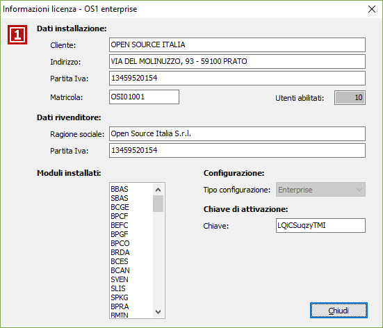
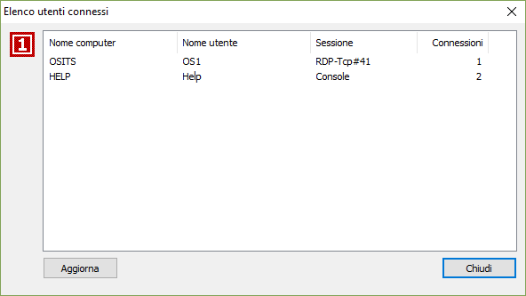

Informazioni aggiuntive
Dal menù ? è possibile accedere, oltre alle informazioni relative alla versione della procedura, del sistema operativo e del SQL Server installato, anche alle informazioni relative alla licenza in uso e controllare gli utenti connessi.
Selezionando la scelta Licenza viene aperta una finestra contenente i dati relativi alla licenza attualmente in uso.

Selezionando la scelta Utenti connessi viene aperta una finestra contenente i dati relativi agli utenti che attualmente sono connessi alla procedura; viene riportato il nome del computer corrispondente, il nome dell'utente di rete, la sessione ed il numero di connessioni che l'utente ha attive. Con il pulsante Aggiorna viene nuovamente eseguito il controllo degli utenti aggiornando i dati visualizzati.
